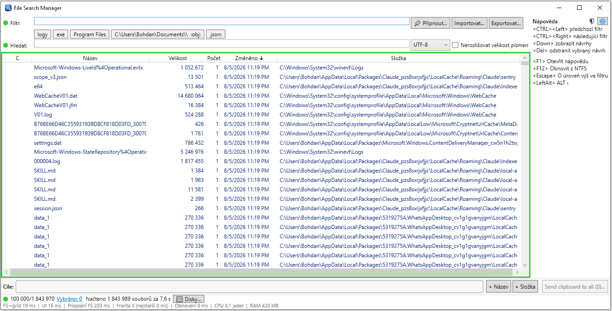

Native Windows desktop utility
Find anything.
Act instantly.
Search millions of files as you type, look inside their contents, and manage the results without breaking your flow.
›
winget install BohdanKoudelka.FileSearchManager
- Free and open source
- MIT licensed
- Windows 10 & 11
File Search Manager
Indexed

⌁
1.8M filesready to filter
⚡
As-you-typeinstant results
NTFS MFT indexing
Live file updates
Content search
Keyboard first
Built for real file systems
Search is only the beginning.
Filter, inspect, organize, transfer, archive, and open files from one focused workspace.
01
Search engine
Millions of paths.
Zero waiting around.
Read the NTFS Master File Table for a fast initial index, follow changes live, and fall back safely to a normal directory scan when needed.
02
Content search
Look inside, not just at names.
Search UTF-8, UTF-16, case-insensitive text, or hexadecimal content within the files you already filtered.
UTF-8UTF-16HEX
03
File operations
Turn results into action.
Copy, move, link, recycle, drag, drop, extract, archive, and open with compatible applications—directly from your result list.
CopyMoveLinkArchive
04
Reusable workflows
Keep frequent searches one click away.
Pin named filters, save a target basket, and export everything as one portable settings file.
● Source files● Recent logs● Large archives
05
Keyboard & mouse
Stay fast from first query to final action.
Rich selection controls, always-available shortcuts, sortable columns, and a complete help view keep advanced workflows discoverable.
CtrlCCopy
F12Refresh index
F1Open help
From disk to done
Three steps.
No detours.
The interface stays deliberately dense where it matters and gets out of your way everywhere else.
Read the complete guide →
-
01
Index
Load local drives through the optional read-only Windows service, elevated helper, or standard folder walk.
-
02
Filter
Type to narrow by name, parent folder, full path, exact directory, or file content.
-
03
Act
Select the right results and handle them using familiar shortcuts, context menus, or drag and drop.
Ready when you are
Put every file
within reach.
Install with Windows Package Manager, or download the latest signed installer from GitHub Releases.
Windows TerminalPowerShell
PS>
winget install BohdanKoudelka.FileSearchManager